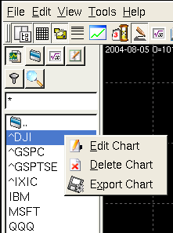
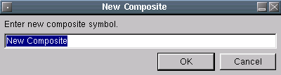

The chart tab allows you to view, edit, delete, export charts. All
items that appear in the list can be either a chart or a directory. A
directory will have a blue folder icon beside the text. Selecting the
directory will move into it and update the list with the contents.
Selecting a chart will display it. Here is an example.

The context menu functions are as follows:
Opens a dialog that allows you to edit some of the chart parameters and chart data. Only the parms listed can be edited. Parms are dependent on the chart types, so not every chart shares the same parms.

Here is where you can edit the tick data. Just select a date and the data will display in the list. To edit a field, just click on the data and a dialog will popup and allow to enter data. To save your changes press the save button. To delete a record press the delete button.
Permanently delete the chart selected.
Clicking this button will bring up a dialog that allows you to select charts you wish to dump the contents to ASCII. The exported files will be placed in the Qtstalker export directory. The exported file is in the Qtstalker format of key/data pairs, so it will not be useful for most of you. I include it for use in correcting data errors and for disaster recovery operations. The Qtstalker quote plugin can import this file format to rebuild the chart. Don't do this unless you know what you are doing.